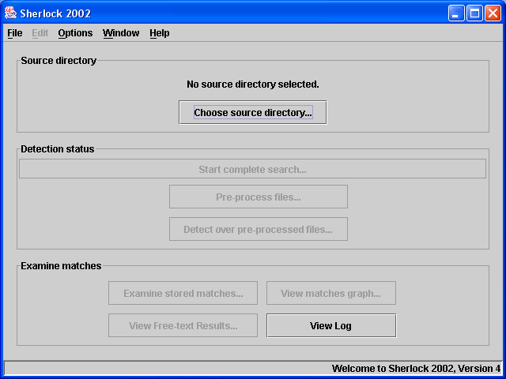

Sherlock can be run in a graphical interface and alternatively a command line front end but the GUI is recommended for most purposes due to its ease-of-use. One should also note that the natural language detection facilities are not supported in command-line mode at this time. In fact, we've never had a look to see if they work!
In order to detect whether there is similarity between submissions, the basic procedure is to input the source directory, run the sherlock detection and examine the results.
